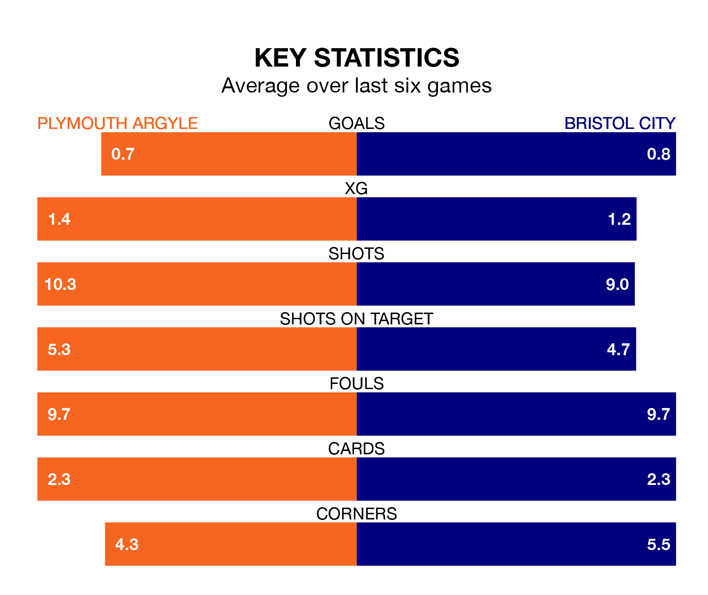

Plymouth Argyle face Bristol City at Home Park on Monday looking to secure a first win in six EFL Championship games.
The Pilgrims have lost four and drawn one matches since they last earned three points – against Middlesbrough on February 24.
They face a City side who have won just two and lost three over that time.
In Morgan Whittaker, Plymouth have one of the league's sharpest shooters so far this season. He has notched 19 goals in 39 appearances, to sit second in the scoring charts.
His goal rate of one every 177 minutes is quicker than that of Tommy Conway, City's top scorer with a goal every 270 minutes, and a total of seven goals in 32 games.
With 43 goals in 39 games so far this season, the Robins are scoring at below the league average rate with 1.1 goals per game. But they are conceding fewer than average too, letting in 45 goals at a rate of 1.2 per game.
Argyle, meanwhile, are average scorers, with 1.4 goals per game. They have conceded 1.6 goals per game.
The Pilgrims are 20th in the table after 39 games, of which they have won 10 and drawn 11, earning 41 points.
The away team are seven places ahead of the hosts in 13th, with 14 wins and eight draws putting them on 50 points.
Over the last two years, Plymouth and City have played each other twice. City won both of them.
Their last meeting was on September 19, when City won 4-1 at home.
Plymouth's last match was on Friday, a 2-1 loss against Norwich City, with Whittaker getting the goal for the Pilgrims.
City beat Leicester City 1-0 last time out, also on Friday, with Anis Mehmeti on the scoresheet.
Monday's match will be refereed by Keith Stroud, who has taken charge of 20 EFL Championship games so far this season, issuing one red card and booking 97 players. He has awarded two penalties.
The last Plymouth game Stroud refereed was a 2-2 home draw with Coventry City on February 14. His last City match was their 1-0 loss away at Southampton on November 29.
Updated: 10:31 (UTC), 31/03/24